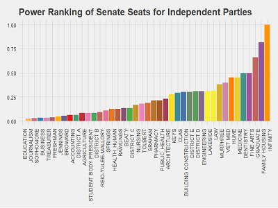
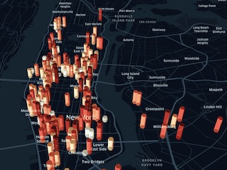
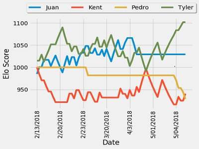
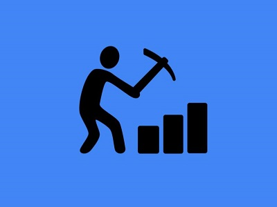
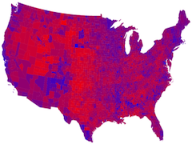

- All
- Data Science
- Projects
- Teaching
- Misc
AI Generated Thank You Cards
Data Science
Kindness
Data Science
Goodreads Analytics Web App
Data Science

Predicting UF Elections
Data Science

Adventures in Pizza Data
Data Science
Analyzing Techies Fleeing Big Cities
Data Science
emote: an Emotion Interpreter
Projects

Ping Pong and Elo Rankings
Data Science
FBK: A Racial Exposé
Data Science

Not My System
Projects
Analyzing DSI
Data Science

Turning Social Questions into DS Projects
Data Science Symposium: May 2017
Creating a DS Portfolio
DSI: May 2018

Hillary's New Slogans
Data Science
Poisson and the EPL: Outcome Prediction
Data Science
Creating a Custom Geocoder in R
Data Science
SCOTUS Meets Trump
Projects
Various Media
Miscellaneous